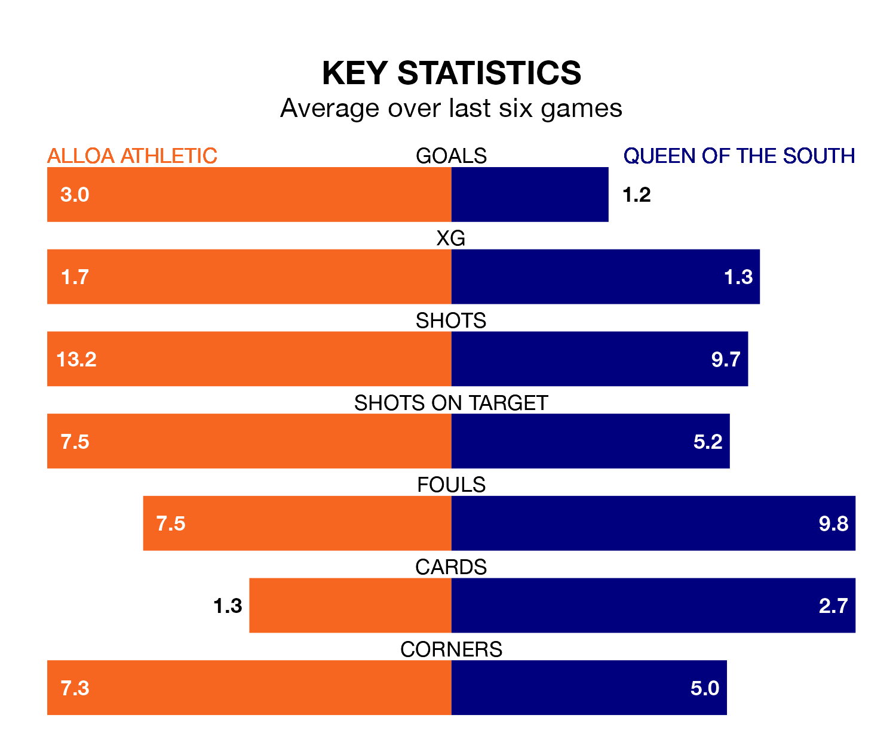

Alloa Athletic host Queen of the South in Saturday's match at the Indodrill Stadium looking to bounce back from defeat last time out in League One.
Alloa, who sit third in the league after 29 games, fell to a 2-1 away defeat to Kelty Hearts on Tuesday.
They face a Queen of the South side who also lost their last match, a 4-1 defeat to Falkirk, and who sit eighth in the table.
With 37 goals in 29 games so far this season, Queen of the South are scoring at below the league average rate with 1.3 goals per game. And they are conceding more than average, letting in 48 goals at a rate of 1.7 per game.
Alloa, meanwhile, are above average scorers, with 1.7 goals per game, compared to a league average of 1.6. They have conceded 1.6 goals per game.
Athletic are in reasonable form in League One, with four wins and two losses from their last six games.
With no wins and three draws over that period, the Doonhamers's form is much worse – they have taken three points from 18, compared to the hosts' 12.
In the last 10 years, Alloa and Queen of the South have played each other on 27 occasions. Alloa won 11 of them, Queen of the South nine, and they drew seven times.
On average, Alloa scored 1.6 goals and the Doonhamers 1.6 in those matches.
Their last meeting was on January 13, when they played out a 1-1 draw.
Alloa's Taylor Steven is among the league's most creative players, racking up six assists in 24 appearances so far this season, and holding third spot in League One's assist charts.
For the away team, Gavin Reilly has set up the most goals, having laid on six assists in 24 games.
Saturday's match will be refereed by Alan James Muir, who has taken charge of one League One game so far this season, issuing one red card and booking five players. He has awarded one penalty.
The last Alloa game Muir refereed was a 1-0 home loss to Stirling Albion on August 12. He is yet to oversee a match featuring Queen of the South this season.
Updated: 10:19 (UTC), 22/03/24